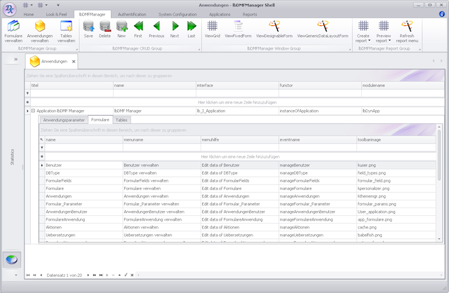

Distributed Multiplatform Framework

Open Source als Möglichkeit für kostengünstige Software. Ja Sie lesen richtig! Diese Software gibt es kostenlos. Sie stehen als Nutzer aber nicht im Regen, wenn es einmal nicht weiter geht. Schauen Sie meine Liste der Dienstleistungen an und überzeugen sich vom Support.
Dieses Projekt ermöglicht Ihnen, viel Zeit bei der Erstellung einer ersten Software Version zu sparen. Sie erstellen ein Modell, welches durch das Programm interpretiert wird. Ein Modell entspricht in der ersten Ausprägung einem Tabellenschema, womit es ein leichtes ist ein solches Modell zu erstellen. Wenn das Modell importiert ist, können Sie schon eine erste lauffähige Anwendung bestaunen, Testdaten eingeben und diese später sogar in die reale Anwendung übernehmen. (Vorausgesetzt, sie überschreiben bei einem weiteren Import nicht die Datenbank...)
In der dargestellten Anwendung sehen Sie ein geladenes Modell, welches in diesem Fall das Modell der Anwendung selbst ist. In der Tat ist der Prototyper selbst ein Prototyp. Innerhalb dieser Anwendung haben Sie die Möglichkeit, das Modell weiter zu bearbeiten. Bspw. ist es praktisch, hier eine Konfiguration für die Datenbank anzugeben. Es stehen des weiteren die übliche Navigation bereit, wie Anfang/Vor/Zurück/Ende. Eine Navigation in die Detailformulare ist möglich, sofern Sie dies modellieren.
CAB DevExpress Codegenerator Compilation

Haben Sie ein Modell erstellt und entspricht es nach Ihnren Vorstellungen dem, was das Programm später machen soll, können Sie hiermit eine erste Prototyp Variante erstellen, die auch schön aussieht. Verwendet wird ein kommerzielles Framework (DevExpress) und eine freie Implementierung eines Komposite Frameworks, welches eine modulare Anwendung als Ziel anstrebt und demnach erweiterbar ist.
Sie sehen eine ansprechende Anwendung im Menuband Design, welches durch das Modell beeinflussbar ist. Weiter haben Sie die Möglichkeit Reports zu erstellen. Ein eingebauter Report Designer hilft ihnen auf einfache Weise Ihre Reports zu gestalten.
Im Übrigen ist die dargestellte Anwendung jene aus der oben dargestellten Version. Somit haben Sie auch die Gelegenheit, Ihr Design in einem Report zu dokumentieren, nach PDF und weitere Formate zu exportieren.
Die tabellarische Darstellung bietet die Möglichkeit Details aufzuklappen, Spalten zu sortieren, Filter zu setzen sowie Spalten zu verstecken. Eine Formularansicht bietet Ihnen Endbenutzer-Design an, welches das Anpassen von dem Layout erlaubt. Dieses Layout wird auf dem Rechner unter dem Benutzeraccount gespeichert.
In der aktuellen Version wird für die Anwendung ebenso ein Service erstellt, welcher technisch gesehen eine Trennung von der Anwendung darstellt und auf einem Server im Internet installiert werden kann. Es ist ein Windows Dienst welcher mittels Ferderated Authentication abgesichert ist, was Ihnen ein lästiges Anmelden an verschiedenen Services erspart / vereinfacht. Dieser Federated Authentication Service und dessen Management Software steht ebenfalls als Modell zur Verfügung und kann entsprechend als Anwendung generiert werden.